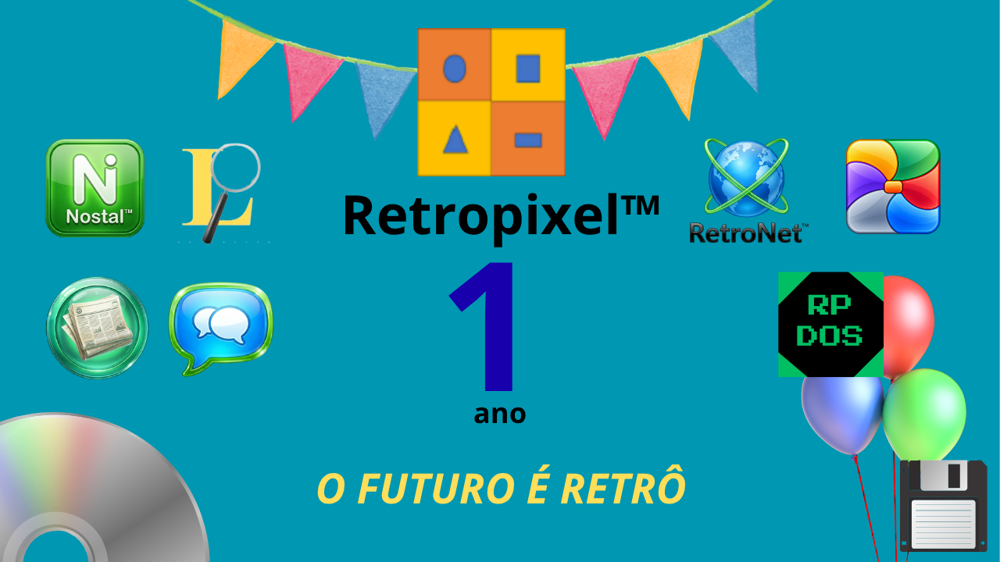

★ UMA DATA ESPECIAL ★

ANO DE RETROPIXEL™!
Uma jornada de criatividade, tecnologia e nostalgia.
10 DE OUTUBRO DE 2025 — 10 DE OUTUBRO DE 2026
Uma mensagem especial do fundador
Olá a todos que estão visitando este site. Primeiramente, obrigado por estar aqui. Cada visitante conta para que mais e mais pessoas conheçam a Retropixel™. E se você está aqui hoje, é porque você se importa com o que fazemos. E o que você está fazendo aqui justamente hoje? Hoje não é só mais um dia normal? Não. Hoje, a Retropixel™ completa 1 ano de existência. Essa página é dedicada a comemorar esse dia e fazer com que todos que estão aqui terem ao menos uma notícia boa no dia, tanto para quem está feliz como quem não está. Sabe, quando eu fundei a Retropixel™, eu pensei: "é agora que eu vou fazer uma empresa que vai brilhar" E aqui estou eu, 1 ano depois. Isso me fez refletir que o importante é tentar até conseguir e continuar, porque um dia vai valer apena. Ninguém estaria aqui comemorando se desde 10 de Outubro de 2025 eu não tivesse continuado criando. Fica a lição: tente até conseguir. Por fim, quero agradecer a todos que visitaram essa página, seja na Internet ou na Wayback Machine. O primeiro ano se completou. Que venham muito mais.
Guilherme, 10/10/2026.
🎮 Minijogo: Caça aos Pixels!
Vamos comemorar! Clique nos quadradinhos coloridos para marcar pontos. Seu objetivo é marcar o maior número de pontos antes que o tempo acabe.
Preparado para a diversão?
Dica: seja rápido! Cada clique vale 1 ponto.
Obrigado por fazer parte desta história!
Retropixel™ · 2025–2026
Que venham muitos outros pixels!
◀ VOLTAR AO SITE